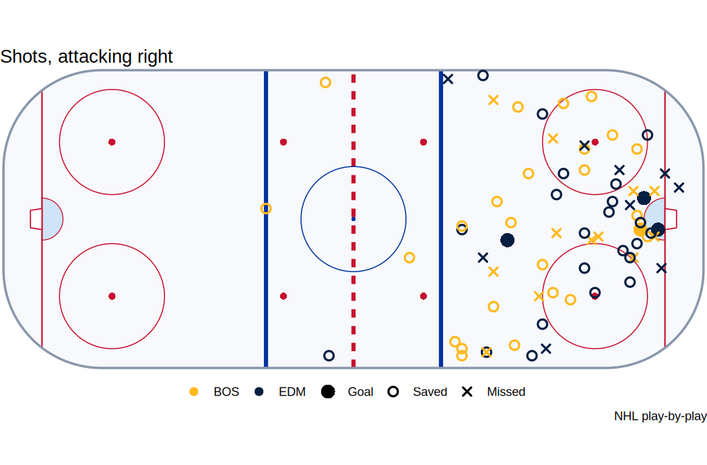
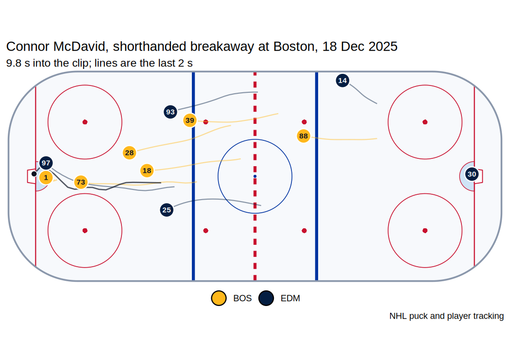
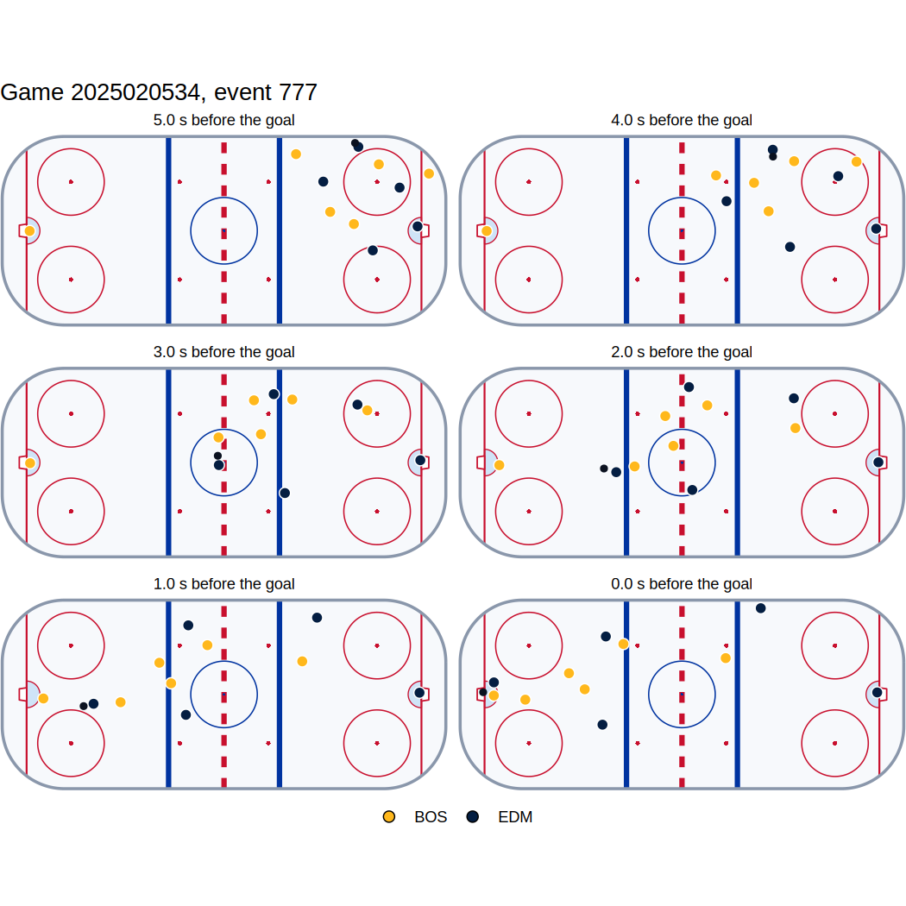
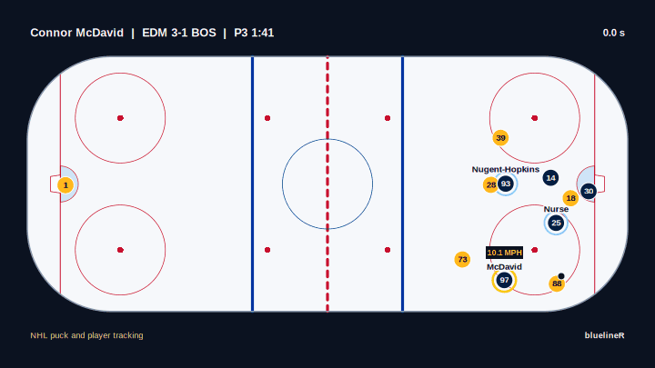
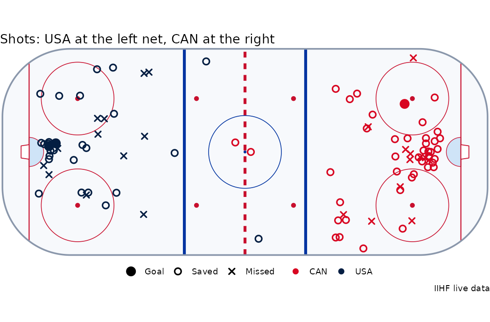

bluelineR wraps the public APIs behind NHL.com and returns tidy tibbles: scores, schedules, standings, play-by-play, box scores and shift charts; players, rosters, stat leaders and the draft; the stats and records APIs; NHL EDGE skating, shot and zone-time tracking; and the puck and player tracking frames behind every goal since 2023-24, ten frames a second, with tools that read how each goal was scored and draw it on a rink.
It grew out of BluelineMetrics, where these endpoints feed the live game tracker, the goal replays and the player pages.
Installation
# install.packages("pak")
pak::pak("ethanrawson/bluelineR")A game
library(bluelineR)
nhl_scores("2026-10-20")[, c("id", "away_team_abbrev", "away_team_score", "home_team_abbrev", "home_team_score")]
#> # A tibble: 11 × 5
#> id away_team_abbrev away_team_score home_team_abbrev home_team_score
#> <int> <chr> <int> <chr> <int>
#> 1 2026020141 SJS 4 MTL 3
#> 2 2026020142 COL 3 NJD 4
#> 3 2026020143 ANA 2 NYI 3
#> 4 2026020144 LAK 5 WSH 2
#> 5 2026020145 TOR 6 CBJ 2
#> # ℹ 6 more rowsPlay-by-play comes back one row per event, with the clock in seconds, the strength, the players by name, the running score, and the location turned so the shooting team always attacks to the right:
pbp <- nhl_pbp(2025020534)
pbp[pbp$type == "goal", c("period", "time_in_period", "event_team", "strength_state", "player_1_name", "x_fixed", "y_fixed")]
#> # A tibble: 4 × 7
#> period time_in_period event_team strength_state player_1_name x_fixed y_fixed
#> <int> <chr> <chr> <chr> <chr> <dbl> <dbl>
#> 1 1 13:38 EDM 5v4 Ryan Nugent-Hopkins 44 -6
#> 2 1 16:27 BOS 5v4 Pavel Zacha 82 -3
#> 3 2 14:38 EDM 5v5 Quinn Hutson 83 6
#> 4 3 01:41 EDM 4v5 Connor McDavid 87 -3plot_shots() puts each club at its own end, the away club at the left net:
plot_shots(pbp)
A goal, from the tracking
The NHL keeps about fourteen seconds of tracking behind every goal. nhl_goal_tracking() fetches it (the files only answer requests that come from nhl.com, so it says it does) as one row per skater, goalie and puck per frame, in feet:
frames <- nhl_goal_tracking(2025020534, 777)
frames
#> # A tibble: 1,683 × 9
#> frame time entity_id is_puck player_id sweater_number team x y
#> <int> <dbl> <dbl> <lgl> <dbl> <dbl> <chr> <dbl> <dbl>
#> 1 1 0 1 TRUE NA NA <NA> 77.9 -30.7
#> 2 1 0 6001 FALSE 8480280 1 BOS -87.3 -0.403
#> 3 1 0 6018 FALSE 8478401 18 BOS 81.0 -4.75
#> 4 1 0 6028 FALSE 8477496 28 BOS 54.4 -0.288
#> 5 1 0 6039 FALSE 8479987 39 BOS 57.7 15.4
#> # ℹ 1,678 more rowsclassify_goal() reads how it was scored. The same rules build the goal types on BluelineMetrics, and the R port matches them goal for goal:
goal <- classify_goal(frames, team = "EDM", shot_type = "backhand")
goal[, c("shooter", "distance", "shot_speed", "since_neutral", "kinds")]
#> # A tibble: 1 × 5
#> shooter distance shot_speed since_neutral kinds
#> <dbl> <dbl> <dbl> <dbl> <chr>
#> 1 8478402 7.5 24.1 2.8 rush, breakaway
plot_goal(frames, title = "Connor McDavid, shorthanded breakaway at Boston, 18 Dec 2025")
plot_goal_sequence(frames, n = 6, seconds = 5)
animate_goal() plays it back as an MP4: every player and the puck, the scorer and his assists named, his skating speed, and the last three seconds again at half speed (it needs the av package).
animate_goal(frames, "mcdavid.mp4", goal = nhl_goal_replay(2025020534, 777))
Game tracking summaries
For 2021-22 to 2023-24 (and some of 2020-21 and 2024-25) the NHL’s tracking vendor left a summary of every game: each player’s skating speed, distance, zone time and zone starts, and his puck possession time, in all, by zone and by strength, with each club’s possession share. Individual possession is not in NHL EDGE.
tr <- nhl_tracking_summary(2023020500)
tr$teams[, c("team", "possession_pct", "possession_pct_o_zone", "possession_pct_d_zone")]
#> # A tibble: 2 × 4
#> team possession_pct possession_pct_o_zone possession_pct_d_zone
#> <chr> <dbl> <dbl> <dbl>
#> 1 FLA 51.5 45.4 34.4
#> 2 STL 48.5 38.4 42.0
top <- tr$players[order(-tr$players$possession_time), ]
top[, c("name", "team", "time_on_total", "possession_time", "possession_time_o_zone", "speed_max_mph", "distance_miles")]
#> # A tibble: 40 × 7
#> name team time_on_total possession_time possession_time_o_zone speed_max_mph distance_miles
#> <chr> <chr> <int> <int> <int> <dbl> <dbl>
#> 1 Colton Pa… STL 1339 61 5 20.7 3.28
#> 2 Brandon M… FLA 1704 57 15 20.9 3.64
#> 3 Aaron Ekb… FLA 899 54 8 20.2 3.27
#> 4 Jordan Ky… STL 960 48 25 20.9 2.93
#> 5 Sam Reinh… FLA 759 45 18 20.7 2.99
#> # ℹ 35 more rowsNHL EDGE
nhl_edge_leaders("skater_speed", season = "2025-26")[, c("rank", "player_first_name", "player_last_name", "player_team_abbrev", "max_speed_imperial", "bursts_over22")]
#> # A tibble: 10 × 6
#> rank player_first_name player_last_name player_team_abbrev max_speed_imperial bursts_over22
#> <int> <chr> <chr> <chr> <dbl> <int>
#> 1 1 Beck Malenstyn BUF 24.9 14
#> 2 2 Nathan MacKinnon COL 24.8 45
#> 3 3 Connor McDavid EDM 24.6 151
#> 4 4 Logan Cooley UTA 24.4 33
#> 5 5 Jake Sanderson OTT 24.4 31
#> # ℹ 5 more rows
mcdavid <- nhl_edge_skater(8478402, "2025-26")
mcdavid$info[, c("skating_speed_speed_max_imperial", "skating_speed_speed_max_percentile", "top_shot_speed_imperial", "total_distance_skated_imperial")]
#> # A tibble: 1 × 4
#> skating_speed_speed_max_imp…¹ skating_speed_speed_…² top_shot_speed_imper…³ total_distance_skate…⁴
#> <dbl> <dbl> <dbl> <dbl>
#> 1 24.6 0.997 82.0 330.
#> # ℹ abbreviated names: ¹skating_speed_speed_max_imperial, ²skating_speed_speed_max_percentile,
#> # ³top_shot_speed_imperial, ⁴total_distance_skated_imperialBest-on-best tournaments
Every tournament NHL players have played in: the Canada Cup, the World Cup of Hockey, the Olympics and the 4 Nations Face-Off, from 1976 to 2026. Each player’s and club’s numbers at each one, careers with Olympic medals, every game and every final. The game ids open the NHL’s play-by-play, in full for the 4 Nations and the 2016 World Cup and goals and penalties for the Olympics, and the 4 Nations goals have player tracking: animate_goal(nhl_goal_tracking(2024200007, 1443), goal = nhl_goal_replay(2024200007, 1443)) is McDavid’s overtime winner in the final.
oly <- nhl_international("skater", "olympics", 2026)
oly[, c("first_name", "last_name", "tri_code", "games_played", "goals", "assists", "points", "toi_seconds")]
#> # A tibble: 264 × 8
#> first_name last_name tri_code games_played goals assists points toi_seconds
#> <chr> <chr> <chr> <int> <int> <int> <int> <int>
#> 1 Connor McDavid CAN 6 2 11 13 7285
#> 2 Macklin Celebrini CAN 6 5 5 10 7119
#> 3 Lucas Raymond SWE 5 1 8 9 5560
#> 4 Joel Armia FIN 6 3 5 8 4639
#> 5 Juraj Slafkovský SVK 6 4 4 8 7145
#> # ℹ 259 more rows
winners <- nhl_international_winners()
print(winners[, c("tournament", "year", "winning_tricode", "winning_score", "losing_tricode", "losing_score", "overtime")], n = 15)
#> # A tibble: 15 × 7
#> tournament year winning_tricode winning_score losing_tricode losing_score overtime
#> <chr> <dbl> <chr> <int> <chr> <int> <chr>
#> 1 Canada Cup 1976 CAN 5 TCH 4 OT
#> 2 Canada Cup 1981 URS 8 CAN 1 <NA>
#> 3 Canada Cup 1984 CAN 6 SWE 5 <NA>
#> 4 Canada Cup 1987 CAN 6 URS 5 <NA>
#> 5 Canada Cup 1991 CAN 4 USA 2 <NA>
#> 6 World Cup of Hockey 1996 USA 5 CAN 2 <NA>
#> 7 Olympics 1998 CZE 1 RUS 0 <NA>
#> 8 Olympics 2002 CAN 5 USA 2 <NA>
#> 9 World Cup of Hockey 2004 CAN 3 FIN 2 <NA>
#> 10 Olympics 2006 SWE 3 FIN 2 <NA>
#> 11 Olympics 2010 CAN 3 USA 2 OT
#> 12 Olympics 2014 CAN 3 SWE 0 <NA>
#> 13 World Cup of Hockey 2016 CAN 2 EUR 1 <NA>
#> 14 4 Nations Face-Off 2025 CAN 3 USA 2 OT
#> 15 Olympics 2026 USA 2 CAN 1 OT
games <- nhl_international_games("4 nations")
final <- nhl_pbp(games$game_id[games$series_title == "Final"])
final[final$type == "goal", c("period", "time_in_period", "event_team", "player_1_name", "x_fixed", "y_fixed")]
#> # A tibble: 5 × 6
#> period time_in_period event_team player_1_name x_fixed y_fixed
#> <int> <chr> <chr> <chr> <dbl> <dbl>
#> 1 1 04:48 CAN Nathan MacKinnon 41 7
#> 2 1 16:52 USA Brady Tkachuk 80 -1
#> 3 2 07:32 USA Jake Sanderson 73 7
#> 4 2 14:00 CAN Sam Bennett 81 10
#> 5 4 08:18 CAN Connor McDavid 68 6IIHF tournaments: every shot, located
The IIHF’s live-data feed has every game of its championships (the World Championship, the World Juniors, the women’s and under-18 Worlds and the divisions) and the 2026 Olympics, with every shot placed on the ice from the 2019 tournaments on, goals and penalties, and each period’s team stats. The 2026 Olympic final, Jack Hughes in overtime:
shots <- iihf_shots(1010000058)
shots[shots$result == "goal", c("period", "time", "team", "player_name", "x", "y", "distance")]
table(shots$team, shots$result)
wm <- iihf_schedule(2026, "wm")
wm[wm$phase %in% c("Semifinals", "BronzeMedalGame", "GoldMedalGame"), c("game_id", "date", "phase", "home_team", "away_team", "home_score", "away_score")]
#> # A tibble: 3 x 7
#> period time team player_name x y distance
#> <chr> <chr> <chr> <chr> <dbl> <dbl> <dbl>
#> 1 1 06:00 USA Matt Boldy 80.8 -2.38 8.54
#> 2 2 38:16 CAN Cale Makar 65.8 19.8 30.5
#> 3 OT 61:41 USA Jack Hughes 78 -3.57 11.6
#>
#> blocked goal missed saved
#> CAN 24 1 12 41
#> USA 17 2 12 26
#> # A tibble: 4 x 7
#> game_id date phase home_team away_team home_score away_score
#> <chr> <date> <chr> <chr> <chr> <int> <int>
#> 1 12917 2026-05-30 Semifinals SUI NOR 6 0
#> 2 12918 2026-05-30 Semifinals CAN FIN 2 4
#> 3 12919 2026-05-31 BronzeMedalGame CAN NOR 2 3
#> 4 12920 2026-05-31 GoldMedalGame SUI FIN 0 1
plot_shots(shots)
DraftKings odds and player props
ESPN’s NHL odds come from DraftKings: every game’s moneyline, puck line and total, opening and current, and DraftKings’ player props (shots, points, assists, saves, goalscorer, milestones, club totals), each over/under as one row with the no-vig chance and the player’s NHL id.
odds <- espn_odds()
odds[, c("home_team", "away_team", "home_ml", "away_ml", "home_win_prob", "total_line", "over_price", "under_price")]
props <- espn_props()
props[props$stat %in% "shots", c("team", "player_name", "player_id", "line", "over", "under", "over_prob")]The stats API
nhl_stats("skater/summary", "2025-26", sort = "points", limit = 5)[, c("skater_full_name", "team_abbrevs", "goals", "assists", "points")]
#> # A tibble: 5 × 5
#> skater_full_name team_abbrevs goals assists points
#> <chr> <chr> <int> <int> <int>
#> 1 Connor McDavid EDM 48 90 138
#> 2 Nikita Kucherov TBL 44 86 130
#> 3 Nathan MacKinnon COL 53 74 127
#> 4 Macklin Celebrini SJS 45 70 115
#> 5 Mark Scheifele WPG 36 67 103The records site
records.nhl.com keeps a century of tables. nhl_records_catalog() lists the 78 that answer, each with a line on what it holds, and helpers cover the ones people ask for: Game 7, overtime, season-opener, outdoor and overseas records, the draft lottery and its odds, and the milestones in sight.
nhl_franchise_records("game7")[1:5, c("franchise_name", "games_played", "wins", "losses")]
#> # A tibble: 5 × 4
#> franchise_name games_played wins losses
#> <chr> <int> <int> <int>
#> 1 Boston Bruins 31 16 15
#> 2 Toronto Maple Leafs 28 12 16
#> 3 Montréal Canadiens 26 17 9
#> 4 Detroit Red Wings 25 14 11
#> 5 St. Louis Blues 19 10 9
nhl_draft_lottery(2026)[, c("draft_year", "pick", "lottery_team", "player_name", "effect")]
#> # A tibble: 2 × 5
#> draft_year pick lottery_team player_name effect
#> <int> <int> <chr> <chr> <chr>
#> 1 2026 1 TOR Gavin McKenna Moved from 5th to 1st
#> 2 2026 2 SJS Ivar Stenberg Moved from 9th to 2ndWhat it covers
| Area | Functions | Endpoint |
|---|---|---|
| Scores, schedule, standings |
nhl_scores(), nhl_schedule(), nhl_team_schedule(), nhl_standings()
|
api-web.nhle.com/v1/score, /schedule, /club-schedule-season, /standings
|
| Games |
nhl_pbp(), nhl_boxscore(), nhl_game(), nhl_shifts()
|
/gamecenter/{id}/play-by-play, /boxscore, /landing; api.nhle.com/stats/rest/en/shiftcharts
|
| Goal tracking |
nhl_goal_tracking(), nhl_goal_replay(), goal_frame(), classify_goal(), goal_context(), skater_speed(), plot_goal(), animate_goal()
|
wsr.nhle.com/sprites/{season}/{game}/ev{event}.json, /ppt-replay/goal
|
| Game tracking summaries |
nhl_tracking_summary(), nhl_tracking_player_stats(), nhl_tracking_entities()
|
live.nhle.com/ppt/{season}/{game}/ (2021-22 to 2023-24, some of 2020-21 and 2024-25) |
| NHL EDGE |
nhl_edge_skater(), nhl_edge_goalie(), nhl_edge_team(), nhl_edge_leaders(), nhl_edge_landing(), nhl_edge_by_the_numbers()
|
/edge/... (20 reports) |
| Players and clubs |
nhl_player(), nhl_player_game_log(), nhl_player_search(), nhl_roster(), nhl_prospects(), nhl_team_stats(), nhl_stat_leaders()
|
/player, /roster, /prospects, /club-stats, /skater-stats-leaders; search.d3.nhle.com
|
| Draft |
nhl_draft_rankings(), nhl_draft_picks()
|
/draft/rankings, /draft/picks
|
| International |
nhl_international(), nhl_international_careers(), nhl_international_games(), nhl_international_winners(), nhl_olympic_podiums()
|
records.nhl.com/site/api/international-*, /olympic-*
|
| Stats and records APIs |
nhl_stats(), nhl_stats_reports(), nhl_teams(), nhl_seasons(), nhl_franchises(), nhl_records()
|
api.nhle.com/stats/rest/en, records.nhl.com/site/api
|
| IIHF tournaments |
iihf_schedule(), iihf_olympic_games(), iihf_game(), iihf_shots(), iihf_events(), iihf_period_stats()
|
realtime.iihf.com/gamestate/GetLatestState/{game}; schedules from canada-central.iihf.com
|
| DraftKings odds and props |
espn_odds(), espn_props(), devig()
|
site.api.espn.com/.../scoreboard; sports.core.api.espn.com/.../odds/100/propBets
|
| Players, clubs and games, more |
nhl_player_bio(), nhl_team_comparison(), nhl_broadcasts(), nhl_quick_stats(), nhl_news(), nhl_videos(), espn_player_splits()
|
api-web.nhle.com/v2/player/{id}/bio, /v1/team-stats-comparison, /v1/how-to-watch; live.nhle.com/psr; forge-dapi.d3.nhle.com/v2/content; ESPN athlete splits |
| Playoff history |
nhl_playoff_series(), nhl_playoff_games()
|
records.nhl.com/site/api/playoff-franchise-vs-team, /yearly-playoff-series-details
|
| Records |
nhl_franchise_records(), nhl_draft_lottery(), nhl_draft_lottery_odds(), nhl_milestones(), nhl_records_catalog()
|
records.nhl.com/site/api/franchise-all-time-*, /neutral-site-standings, /draft-lottery-*; api.nhle.com/stats/rest/en/milestones
|
| Images |
nhl_headshot_url(), nhl_logo_url(), nhl_jersey_url(); broadcaster logos in nhl_broadcasts()
|
assets.nhle.com/mugs, /logos/nhl, /textures/nhl/jersey, /logos/broadcast
|
| Anything else |
nhl_api(), tidy_json()
|
any of the above |
Being a good guest
These are the NHL’s own, undocumented APIs; bluelineR is not affiliated with the NHL, and endpoints can change without notice. Requests are throttled (five a second by default) and retried with backoff on rate limits; turn on options(bluelineR.cache = TRUE) to keep responses for the session.
bluelineR stands on the work of other R hockey packages, notably nhlscraper, hockeyR and fastRhockey. nhlscraper was first to the goal tracking frames: its replay() has read them from wsr.nhle.com since November 2025, and replays() serves a season of them at once. What bluelineR adds:
-
Game tracking summaries (
nhl_tracking_summary()): each player’s puck possession time, by zone and strength, with speed, distance, zone time and zone starts, and each club’s possession share, from the per-game files atlive.nhle.com/ppt. -
Reading a goal from its tracking (
classify_goal()): rush, breakaway, odd-man rush, one-timer, cross-slot pass, traffic, behind the net and the forecheck, with who carried it in and who made the pass, and the frame the puck went in (goal_frame()). -
Goal replays as video (
animate_goal()): the tracking played back on a rink as an MP4, with the scorer and his assists named, his skating speed and the finish again in slow motion. -
Best-on-best tournaments (
nhl_international()and the rest): every Canada Cup, World Cup, Olympics and 4 Nations from records.nhl.com, with careers, Olympic medals, every game and every final. -
IIHF tournaments with every shot located (
iihf_shots()and the rest): the World Championship, World Juniors, women’s and under-18 Worlds, the divisions and the 2026 Olympics, from the IIHF’s live-data feed, which no other package reads. -
DraftKings player props (
espn_props()): ESPN’s prop list for every game, over and under paired and each player matched to his NHL id, with game lines (espn_odds()) anddevig(). -
The newer NHL endpoints: the v2 player bio with every award and its season (
nhl_player_bio()), the team comparison, the viewing guide, the quick standings and leader files, NHL.com news and videos, playoff series records and every playoff game, and all thirteen EDGE top-10 boards. -
NHL EDGE leaderboards, comparison reports and last night’s standouts, the goal replay summary (
nhl_goal_replay()) and player search.